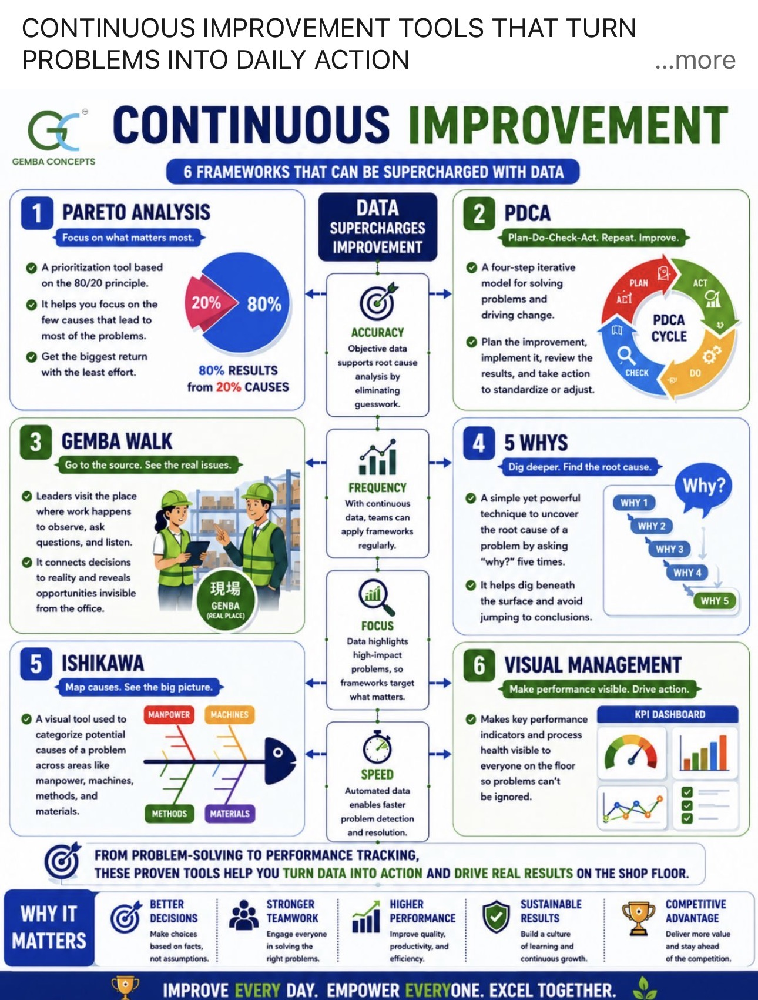
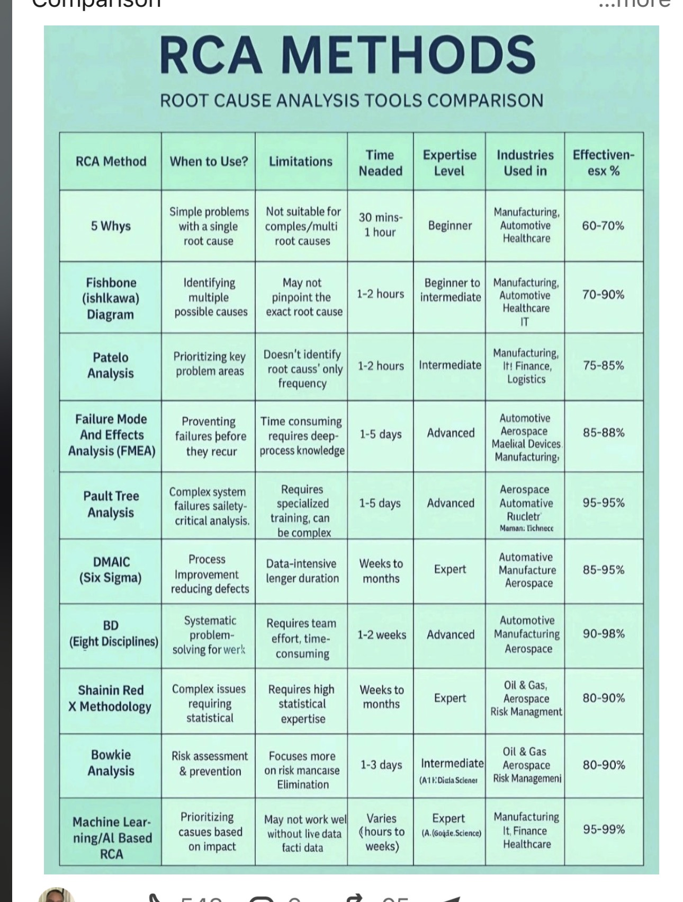
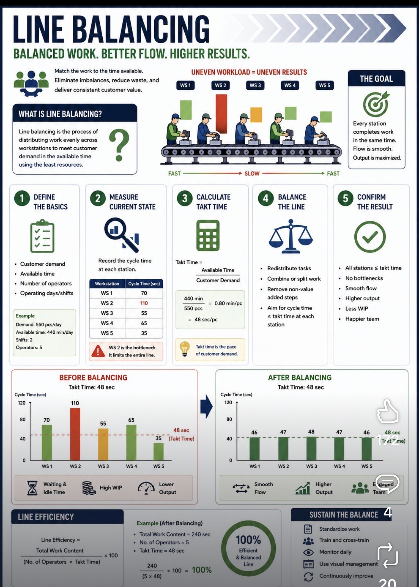

Services
Services That Reduce Cost, Improve Quality, and Increase Capacity.
Focused Lean, Six Sigma, Industrial Engineering, and Operational Excellence services designed to identify waste, reduce variation, improve flow, and create measurable business results.
What Clients Receive
Clear findings, improvement opportunities, savings potential, and a practical roadmap for action.
Assessment Packages
3-Day Rapid Operational Assessment
Starting at $4,500
Best for organizations that need fast visibility into waste, delays, quality issues, bottlenecks, and improvement opportunities.
- Executive interviews
- Gemba walks
- Process observation
- Waste identification
- Quality review
- Savings opportunity analysis
- Executive report-out
Primary Outcome: A clear assessment of what is hurting performance and what should be improved first.
5-Day Operational Excellence Deep Dive
Starting at $8,500
Best for organizations that need deeper analysis, current-state understanding, time studies, and future-state design.
- Everything in the 3-day assessment
- Process mapping
- Time studies
- Current-state analysis
- Waste and bottleneck analysis
- Capacity review
- Future-state process design
- 30-60-90 day roadmap
Primary Outcome: A practical improvement blueprint with current-state findings and future-state recommendations.
Transformation & Implementation
Custom Engagement
Best for organizations ready to move from recommendations into execution, project leadership, coaching, and measurable improvement.
- DMAIC improvement projects
- DMADV / DFSS design projects
- Kaizen events
- KPI development
- Standard work development
- Change management
- Executive coaching
- Program management
Primary Outcome: Sustainable operational improvement and stronger process control.
Lean & Six Sigma Toolsets We Apply
Every organization is different. We select the right tool for the right problem, including Pareto Analysis, PDCA, Gemba Walks, 5 Whys, Ishikawa diagrams, visual management, and structured improvement methods.

Lean Enterprise
Eliminate waste, improve flow, reduce delays, and increase value delivered to the customer.
Six Sigma
Reduce variation, defects, rework, and process instability through structured quality improvement.
Industrial Engineering
Improve capacity, labor utilization, workflow design, time performance, and operational efficiency.
Root Cause Analysis: Solving Problems Permanently
We do not stop at symptoms. We use structured root cause methods to understand why problems occur and what process changes can prevent them from returning.

Industrial Engineering & Capacity Optimization
For operations that struggle with uneven workloads, delays, bottlenecks, or capacity limits, line balancing and workflow analysis can help improve throughput without immediately adding people, equipment, or space.

Capacity Planning
Understand whether people, equipment, time, or process design are limiting output.
Workflow Balancing
Reduce uneven workloads, idle time, handoff delays, and process constraints.
Throughput Improvement
Identify ways to increase output, shorten cycle time, and improve operational flow.
Specific Services Available
Operational Excellence Assessments
Focused reviews that identify waste, quality concerns, bottlenecks, risks, savings opportunities, and priority improvements.
Lean Process Improvement
Improvement work focused on flow, waste reduction, standard work, visual management, process simplification, and productivity improvement.
Six Sigma Quality Improvement
Structured improvement for defects, variation, rework, errors, inconsistent outcomes, and customer-impacting quality issues.
DMAIC Improvement Projects
Define, Measure, Analyze, Improve, and Control existing processes that need stronger performance and stability.
DMADV / DFSS Process Design
Design future-state processes when existing workflows cannot meet requirements or when new processes need to be built correctly from the start.
Industrial Engineering Support
Capacity planning, time studies, line balancing, workflow design, throughput analysis, and resource optimization.
Executive Coaching & Improvement Leadership
Support for leaders who need help prioritizing improvement opportunities, guiding teams, and creating a sustainable operational excellence culture.
Why Clients Engage Us
Organizations engage Lean & Six Sigma Improvement Associates when they need practical, experienced support identifying where money, time, quality, and capacity are being lost.
Common Outcomes
Cost Reduction • Productivity Improvement • Quality Improvement • Defect Reduction • Capacity Increase • Better Flow • Stronger Process Control
Industries Served
Ready to Find Hidden Opportunities?
Request a focused assessment and receive practical recommendations to improve performance, reduce cost, improve quality, and increase capacity.
Request My Assessment